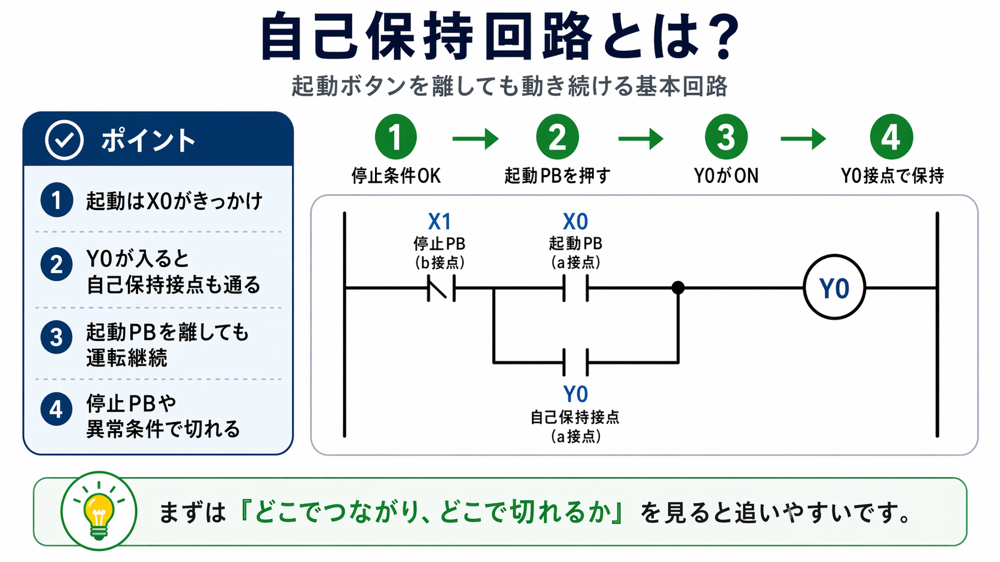

この記事が向いている人
- 自己保持回路の基本を最初から整理したい人
- 起動ボタンを離しても動き続ける理由を知りたい人
- ラダー図で保持が切れる流れを確認したい人
自己保持回路は、起動ボタンを一度押したあと、ボタンを離しても運転を続けるための回路です。
起動ボタンだけで出力を動かすと、ボタンを離した瞬間に出力も切れてしまいます。そこで、運転出力がONしたあと、自分自身の接点を使って回路をつなぎ続けます。
この「自分の出力で自分を保持する」考え方が、自己保持回路の基本です。


先輩自己保持は、制御回路のかなり基本です。起動ボタンを離しても動く理由は、運転出力の接点が回路をつなぎ続けているからです。

新人起動ボタンがずっと押されているわけじゃなくて、別の接点で運転を続けているんですね。
起動ボタンは運転開始のきっかけです。運転を続ける役割は、運転出力の自己保持接点が担当します。
自己保持回路は、起動、保持、停止の3段階で見ると分かりやすいです。
起動ボタンを押すと運転出力がONし、その運転出力の接点が並列に入って回路を保持します。停止ボタンを押すと、その保持回路が切れて運転出力がOFFします。
起動入力が入り、運転出力がONするきっかけになります。
出力がONすると、運転状態を作ります。接触器やPLC出力などにつながります。
運転出力自身の接点で回路をつなぎ、起動ボタンを離しても運転を続けます。
停止入力が入ると保持回路が切れ、運転出力がOFFします。

自己保持でよく混乱しやすいのは、起動ボタンが運転を続けているように見えてしまう点です。実際には、出力自身の接点が回路を保持しています。
自己保持回路をラダーで見ると、停止b接点の後に、起動a接点と自己保持接点が並列で入る形になります。
ここではメーカー画面を完全再現するのではなく、初心者が追いやすい概念図として整理します。
一瞬だけ動いて止まる場合は、起動入力は入っていても、自己保持接点や保持条件が成立していない可能性があります。
起動・停止回路は、起動ボタンで動かし、停止ボタンで止める基本の考え方です。
自己保持回路は、その起動・停止回路に「起動ボタンを離しても運転を続ける仕組み」を加えたものとして見ると分かりやすいです。
| 項目 | 起動・停止回路 | 自己保持回路 |
|---|---|---|
| 見るポイント | 起動と停止の条件 | 起動後に運転を続ける保持条件 |
| 起動ボタンを離した後 | 構成によっては止まる | 自己保持接点で運転を続ける |
| 停止方法 | 停止ボタンや停止条件で切る | 停止ボタンで保持を切って止める |
自己保持回路でよくあるトラブルは、起動ボタンを押している間だけ動き、離すと止まってしまう状態です。
この場合は、起動入力だけでなく、自己保持接点、停止条件、出力状態を順番に確認します。
起動ボタンを押した時に、PLC入力やリレー入力がONしているか確認します。
起動条件が成立した時に、Y出力やリレー出力がONしているか確認します。
運転出力がONした後、その補助接点やラダー上の自己保持接点がONしているか確認します。
停止ボタン、非常停止系の接点、異常停止条件などで保持が切れていないか確認します。

自己保持回路は運転を続けるための基本回路ですが、非常停止や安全リレーの代わりにはなりません。安全に関わる停止は、安全回路として別に考えます。